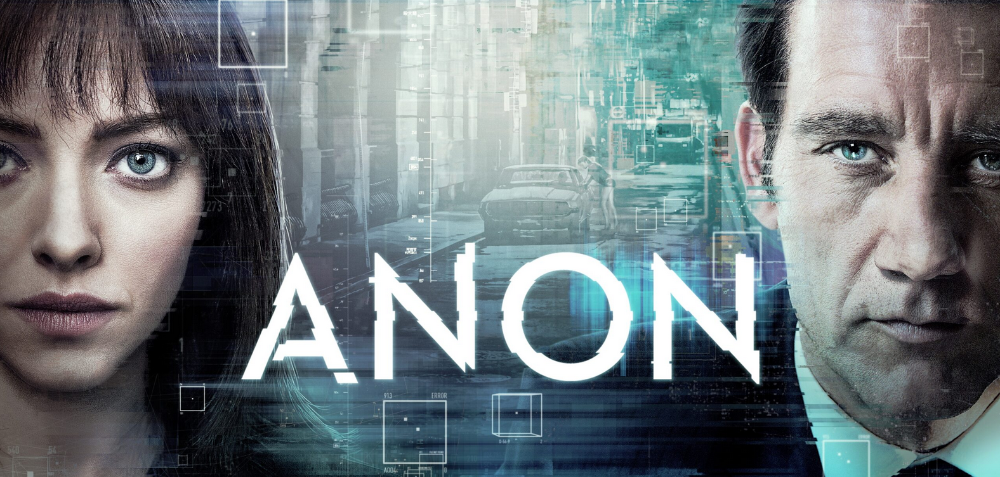

Com o roteiro de O Show de Truman (1998) e direção de Simone (2002) e O Preço do Amanhã (2011) no currículo, Andrew Niccol já se comprovou como um devoto do sci-fi, no qual a tecnologia costuma mostrar seu lado mais obscuro em forma de entretenimento e/ou manipulação. Seguindo essa ideologia, Niccol escreve e dirige Anon (Anon), um suspense em tons de filme noir, em que detetives buscam pistas para desvendar os crimes de um hacker serial killer.
O grande diferencial é a ambientação da história em um futuro não tão distante, em que as pessoas possuem etiquetas virtuais acessíveis ao olhar de todos, com informações de nome, idade, ficha criminal e ocupação. Ou seja, a humanidade está completamente registrada em um banco de dados virtual e tudo que as pessoas vêem pode ser acessado pelo departamento de segurança.
Filmes produzidos pela NETFLIX ainda não concorriam a prêmios em 2018.
Sinópse

Em um mundo futuro onde não há crime por causa de um sistema de vigilância extrema, um detetive (Clive Owen) acaba encontrando uma mulher (Amanda Seyfried) que descobriu uma falha no regime de não-privacidade e que ameaça toda a construção da sociedade.
Bilheteria

O filme foi lançado pela plataforma de streaming NETFLIX.
Crítica
 François Truffaut: Crítico Cinematográfico
François Truffaut: Crítico Cinematográfico
O filme ANON segue a linha das obras de ficção científica sérias. Portanto, servem como alerta para um problema que já acontece atualmente ou que pode surgir no futuro. Tanto que o filme faz questão de exibir sua explicação para a hacker conseguir deletar ou modificar um fato que o olho humano registrou. A revelação vem da própria hacker, papel de Amanda Seyfried, aqui com os cabelos escuros. Contudo, o filme se preocupa tanto em ser coerente cientificamente, que acaba por deixar de lado uma conclusão melhor resolvida para seus personagens.